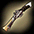
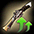

2016/07～ マスケッティア スキル一覧
2018/5/30のマスケスキル改変前のスキルデータ。
2018/5/30バランスパッチ反映版を参考にしてください。
| レフトファイア | ||||||||||||||
|---|---|---|---|---|---|---|---|---|---|---|---|---|---|---|
| スキル難易度 | 1 | |||||||||||||
| 必要スキル | なし |
|||||||||||||
| スキル説明 | 足のホルスターから左手で銃を出し、敵の方に一回発射。 | |||||||||||||
| レベル | 1 | 2 | 3 | 4 | 5 | 6 | 7 | 8 | 9 | 10 | 20 | 30 | 40 | 50 |
| 消費CP | 0 | |||||||||||||
| 獲得CP | 3.5 | 4 | 4.5 | 5 | 5.5 | 6 | 6.5 | 7 | 7.5 | 8 | 13 | 18 | 23 | 28 |
| ◆物理ダメージ | 2% | 4% | 6% | 8% | 10% | 12% | 14% | 16% | 18% | 20% | 40% | 60% | 80% | 100% |
| 攻撃速度 | 0.5% | 1% | 1.5% | 2% | 2.5% | 3% | 3.5% | 4% | 4.5% | 5% | 10% | 15% | 20% | 25% |
| ニーキャッピング | ||||||||||||||
|---|---|---|---|---|---|---|---|---|---|---|---|---|---|---|
| スキル難易度 | 1 | |||||||||||||
| 必要スキル | レフトファイア [3] |
|||||||||||||
| スキル説明 | 左手の銃で敵の足を狙い撃つ。 攻撃された敵は移動速度が遅くなる。 | |||||||||||||
| レベル | 1 | 2 | 3 | 4 | 5 | 6 | 7 | 8 | 9 | 10 | 20 | 30 | 40 | 50 |
| 消費CP | 10.5 | 11 | 11.5 | 12 | 12.5 | 13 | 13.5 | 14 | 14.5 | 15 | 20 | 25 | 30 | 35 |
| 獲得CP | 6.5 | 8 | 9.5 | 11 | 12.5 | 14 | 15.5 | 17 | 18.5 | 20 | 35 | 50 | 65 | 80 |
| ◆物理ダメージ | 2.5% | 5% | 7.5% | 10% | 12.5% | 15% | 17.5% | 20% | 22.5% | 25% | 50% | 75% | 100% | 125% |
| 移動速度低下量 | 25％ | |||||||||||||
| 移動速度減少確率 | 100% | |||||||||||||
| 移動速度減少時間(秒) | 15 | |||||||||||||
 |
チェックマーク | |||||||||||||
|---|---|---|---|---|---|---|---|---|---|---|---|---|---|---|
| スキル難易度 | 2 | |||||||||||||
| 必要スキル | レフトファイア[6] |
|||||||||||||
| スキル説明 | 素早く拳銃を取り出して敵に向かて発射。 撃たれた敵にはマークが表れる。 マークが表れた敵には、チェックメイト及び 長銃系列のスキルがターゲッティングなしで敵中する。 | |||||||||||||
| レベル | 1 | 2 | 3 | 4 | 5 | 6 | 7 | 8 | 9 | 10 | 20 | 30 | 40 | 50 |
| 消費CP | 20.5 | 21 | 21.5 | 22 | 22.5 | 23 | 23.5 | 24 | 24.5 | 25 | 30 | 35 | 40 | 45 |
| 獲得CP | 2.3 | 3.6 | 4.9 | 6.2 | 7.5 | 8.8 | 10.1 | 11.4 | 12.7 | 14 | 27 | 40 | 53 | 66 |
| ◆物理ダメージ | 2% | 4% | 6% | 8% | 10% | 12% | 14% | 16% | 18% | 20% | 40% | 60% | 80% | 100% |
| マーク持続時間(秒) | 60 | |||||||||||||
 |
スクウェアエイム | |||||||||||||
|---|---|---|---|---|---|---|---|---|---|---|---|---|---|---|
| スキル難易度 | 2 | |||||||||||||
| 必要スキル | レフトファイア[6] ニーキャッピング[6] チェックマーク[3] |
|||||||||||||
| スキル説明 | 左手で持った銃に強い魔力を込めて発砲。 弾丸は攻撃線上にいる全ての敵を貫通する。 | |||||||||||||
| レベル | 1 | 2 | 3 | 4 | 5 | 6 | 7 | 8 | 9 | 10 | 20 | 30 | 40 | 50 |
| 消費CP | 11 | 12 | 13 | 14 | 15 | 16 | 17 | 18 | 19 | 20 | 30 | 40 | 50 | 60 |
| 獲得CP | 1.4 | 2.8 | 4.2 | 5.6 | 7 | 8.4 | 9.8 | 11.2 | 12.6 | 14 | 28 | 42 | 56 | 70 |
| ◆物理ダメージ | 1.5% | 3% | 4.5% | 6% | 7.5% | 9% | 10.5% | 12% | 13.5% | 15% | 30% | 45% | 60% | 75% |
| 命中率補正値 | 0.15% | 0.3% | 0.45% | 0.6% | 0.75% | 0.9% | 1.05% | 1.2% | 1.35% | 1.5% | 3% | 4.5% | 6% | 7.5% |
| 貫通確率 | 26% | 27% | 28% | 29% | 30% | 31% | 32% | 33% | 34% | 35% | 45% | 55% | 65% | 75% |
| パラマウントフォーカス | ||||||||||||||
|---|---|---|---|---|---|---|---|---|---|---|---|---|---|---|
| スキル難易度 | 3 | |||||||||||||
| 必要スキル | レフトファイア[6] ライトファイア[6] ニーキャッピング[6]
チェックマーク[3] スクウェアエイム[3] |
|||||||||||||
| スキル説明 | CPを持続的に消耗し、マスケッティアのクリティカル確率と クリティカルダメージを上昇させる。 | |||||||||||||
| レベル | 1 | 2 | 3 | 4 | 5 | 6 | 7 | 8 | 9 | 10 | 20 | 30 | 40 | 50 |
| 消費CP | 1.3 | 1.6 | 1.9 | 2.2 | 2.5 | 2.8 | 3.1 | 3.4 | 3.7 | 4 | 7 | 10 | 13 | 16 |
| クリティカル確率増加 | 1.2% | 1.4% | 1.6% | 1.8% | 2% | 2.2% | 2.4% | 2.6% | 2.8% | 3% | 5% | 7% | 9% | 11% |
| クリティカルダメージ増加 | 3.2% | 3.4% | 3.6% | 3.8% | 4% | 4.2% | 4.4% | 4.6% | 4.8% | 5% | 7% | 9% | 11% | 13% |
| 備考 | アクティブ(ON/OFF)スキル | |||||||||||||
| ライトファイア | ||||||||||||||
|---|---|---|---|---|---|---|---|---|---|---|---|---|---|---|
| スキル難易度 | 1 | |||||||||||||
| 必要スキル | なし |
|||||||||||||
| スキル説明 | 右腕のホルスターから右手で銃を出し、敵の方に一回発射。 | |||||||||||||
| レベル | 1 | 2 | 3 | 4 | 5 | 6 | 7 | 8 | 9 | 10 | 20 | 30 | 40 | 50 |
| 消費CP | 0 | |||||||||||||
| 獲得CP | 3.5 | 4 | 4.5 | 5 | 5.5 | 6 | 6.5 | 7 | 7.5 | 8 | 13 | 18 | 23 | 28 |
| ◆物理ダメージ | 2.5% | 5% | 7.5% | 10% | 12.5% | 15% | 17.5% | 20% | 22.5% | 25% | 50% | 75% | 100% | 125% |
| 命中率 | 0.1% | 0.2% | 0.3% | 0.4% | 0.5% | 0.6% | 0.7% | 0.8% | 0.9% | 1% | 2% | 3% | 4% | 5% |
| ターンイットオン | ||||||||||||||
|---|---|---|---|---|---|---|---|---|---|---|---|---|---|---|
| スキル難易度 | 2 | |||||||||||||
| 必要スキル | ライトファイア[3] ハングオン[3] レフトファイア[3] |
|||||||||||||
| スキル説明 | 右手で持った銃の弾丸に、回転力を込めて発射。 威力のある弾丸は敵のガードまで破る。 | |||||||||||||
| レベル | 1 | 2 | 3 | 4 | 5 | 6 | 7 | 8 | 9 | 10 | 20 | 30 | 40 | 50 |
| 消費CP | 21.2 | 22.4 | 23.6 | 24.8 | 26 | 27.2 | 28.4 | 29.6 | 30.8 | 32 | 44 | 56 | 68 | 80 |
| 獲得CP | 1 | 2 | 3 | 4 | 5 | 6 | 7 | 8 | 9 | 10 | 20 | 30 | 40 | 50 |
| ◆物理ダメージ | 3% | 6% | 9% | 12% | 15% | 18% | 21% | 24% | 27% | 30% | 60% | 90% | 120% | 150% |
| 発動確率(Max 60％) | 10.5% | 11% | 11.5% | 12% | 12.5% | 13% | 13.5% | 14% | 14.5% | 15% | 20% | 25% | 30% | 35% |
| 効果 | 相手の防御力を無視 | |||||||||||||
| ピールオフ | ||||||||||||||
|---|---|---|---|---|---|---|---|---|---|---|---|---|---|---|
| スキル難易度 | 2 | |||||||||||||
| 必要スキル | レフトファイア[6] ライトファイア[6] ハングオン[3] ターンイットオン[6] |
|||||||||||||
| スキル説明 | 右手で持った銃の弾丸に魔力波長を起こして発砲。 敵のバフを除外。 | |||||||||||||
| レベル | 1 | 2 | 3 | 4 | 5 | 6 | 7 | 8 | 9 | 10 | 20 | 30 | 40 | 50 |
| 消費CP | 55 | 60 | 65 | 70 | 75 | 80 | 85 | 90 | 95 | 100 | 150 | 200 | 250 | 300 |
| 獲得CP | 33 | 36 | 39 | 42 | 45 | 48 | 51 | 54 | 57 | 60 | 90 | 120 | 150 | 180 |
| ◆物理ダメージ | 5% | 10% | 15% | 20% | 25% | 30% | 35% | 40% | 45% | 50% | 100% | 150% | 200% | 250% |
| バフ削除発動確率 | 11% | 12% | 13% | 14% | 15% | 16% | 17% | 18% | 19% | 20% | 30% | 40% | 50% | 60% |
| 効果 | 相手のバフをすべて削除 | |||||||||||||
| ヘフティーオプレス | ||||||||||||||
|---|---|---|---|---|---|---|---|---|---|---|---|---|---|---|
| スキル難易度 | 3 | |||||||||||||
| 必要スキル | ライトファイア[12] レフトファイア[6] ニーキャッピング[6]
ハングオン[3] スクウェアエイム[6] チェックマーク[3]
ピールオフ[3] ターンイットオン[6] |
|||||||||||||
| スキル説明 | 右手の銃で重めの弾丸を発射。 撃たれた敵は大きな衝撃によりCP減少。 | |||||||||||||
| レベル | 1 | 2 | 3 | 4 | 5 | 6 | 7 | 8 | 9 | 10 | 20 | 30 | 40 | 50 |
| 消費CP | 33 | 36 | 39 | 42 | 45 | 48 | 51 | 54 | 57 | 60 | 90 | 120 | 150 | 180 |
| 獲得CP | 11 | 12 | 13 | 14 | 15 | 16 | 17 | 18 | 19 | 20 | 30 | 40 | 50 | 60 |
| ◆物理ダメージ | 4% | 8% | 12% | 16% | 20% | 24% | 28% | 32% | 36% | 40% | 80% | 120% | 160% | 200% |
| CP減少量 | 10 | 13 | 16 | 19 | 22 | 25 | 28 | 31 | 34 | 37 | 67 | 97 | 127 | 157 |
 |
ケアフルチョイス | |||||||||||||
|---|---|---|---|---|---|---|---|---|---|---|---|---|---|---|
| スキル難易度 | 3 | |||||||||||||
| 必要スキル | ライトファイヤ[12] ハングオン[3]
レフトファイヤ[3]ターンイットオン[12] |
|||||||||||||
| スキル説明 | 敵に向かって慎重に照準。少し時間はかかるが、 弾丸は必ず命中する。 | |||||||||||||
| レベル | 1 | 2 | 3 | 4 | 5 | 6 | 7 | 8 | 9 | 10 | 20 | 30 | 40 | 50 |
| 消費CP | 24 | 28 | 32 | 36 | 40 | 44 | 48 | 52 | 56 | 60 | 100 | 140 | 180 | 220 |
| 獲得CP | 2 | 4 | 6 | 8 | 10 | 12 | 14 | 16 | 18 | 20 | 40 | 60 | 80 | 100 |
| ◆物理ダメージ | 82% | 89% | 96% | 103% | 110% | 117% | 124% | 131% | 138% | 145% | 215% | 285% | 355% | 425% |
| キャスティング時間(秒) | 1.5 | |||||||||||||
| 効果 | 100％クリティカルで命中 | |||||||||||||
 |
チェックメイト | |||||||||||||
|---|---|---|---|---|---|---|---|---|---|---|---|---|---|---|
| スキル難易度 | 4 | |||||||||||||
| 必要スキル | チェックマーク[12] パラマウントフォーカス[10]
ケアフルチョイス[6] |
|||||||||||||
| スキル説明 | 両手の銃を出し敵に連続発射。 チェックマークの烙印が付いた敵に優先的に発射する。 | |||||||||||||
| レベル | 1 | 2 | 3 | 4 | 5 | 6 | 7 | 8 | 9 | 10 | 20 | 30 | 40 | 50 |
| 消費CP | 33 | 36 | 39 | 42 | 45 | 48 | 51 | 54 | 57 | 60 | 90 | 120 | 150 | 180 |
| 獲得CP | 1.5 | 2 | 2.5 | 3 | 3.5 | 4 | 4.5 | 5 | 5.5 | 6 | 11 | 16 | 21 | 26 |
| ◆物理ダメージ | 6% | 12% | 18% | 24% | 30% | 36% | 42% | 48% | 54% | 60% | 120% | 180% | 240% | 300% |
| 攻撃回数(Max 8) | 2 | 2 | 2 | 2 | 2 | 2 | 2 | 2 | 2 | 2 | 3 | 3 | 4 | 5 |
| 連射間隔 | 4 | |||||||||||||
| キャスティング速度 | 20flame | |||||||||||||
| 効果 | チェックマークが残っている敵に優先して命中。 | |||||||||||||
 |
アトラクションドロー | |||||||||||||
|---|---|---|---|---|---|---|---|---|---|---|---|---|---|---|
| スキル難易度 | 5 | |||||||||||||
| 必要スキル | レフトファイア[12] ライトファイア[12]
リボルバースナップ[12] チップフォーユー[6] チェックメイト[6] |
|||||||||||||
| スキル説明 | 素早く回転しながら両手の拳銃を敵に発射し、 連続的なダメージを与える。 | |||||||||||||
| レベル | 1 | 2 | 3 | 4 | 5 | 6 | 7 | 8 | 9 | 10 | 20 | 30 | 40 | 50 |
| 消費CP | 60 | 65 | 70 | 75 | 80 | 85 | 90 | 95 | 100 | 105 | 155 | 205 | 255 | 305 |
| 獲得CP | 3 | 6 | 9 | 12 | 15 | 18 | 21 | 24 | 27 | 30 | 60 | 90 | 120 | 150 |
| ◆物理ダメージ | -8% | -1% | 6% | 13% | 20% | 27% | 34% | 41% | 48% | 55% | 125% | 195% | 265% | 335% |
| ターゲット数(Max 10) | 2 | 2 | 2 | 2 | 2 | 2 | 3 | 3 | 3 | 3 | 5 | 6 | 8 | 10 |
| 攻撃回数(Max 3) | 1 | 1 | 1 | 1 | 1 | 1 | 1 | 1 | 1 | 1 | 1 | 2 | 2 | 3 |
| 射程距離 | 250 | |||||||||||||
| リボルバースナップ | ||||||||||||||
|---|---|---|---|---|---|---|---|---|---|---|---|---|---|---|
| スキル難易度 | 2 | |||||||||||||
| 必要スキル | レフトファイア[6] ハングオン[6] |
|||||||||||||
| スキル説明 | 手首をもっと早く回し、射撃速度を増加させる。連射速度が速くなる。 | |||||||||||||
| レベル | 1 | 2 | 3 | 4 | 5 | 6 | 7 | 8 | 9 | 10 | 20 | 30 | 40 | 50 |
| 攻撃速度増加(Max 35％) | 5.4% | 5.8% | 6.2% | 6.6% | 7% | 7.4% | 7.8% | 8.2% | 8.6% | 9% | 13% | 17% | 22% | 26% |
| 備考 | パッシブスキル |
|||||||||||||
| チップフォーユー | ||||||||||||||
|---|---|---|---|---|---|---|---|---|---|---|---|---|---|---|
| スキル難易度 | 3 | |||||||||||||
| 必要スキル | レフトファイア[12] ニーキャッピング[12]
チェックマーク[6] |
|||||||||||||
| スキル説明 | 戦闘に没頭し、より攻撃的な射撃を行う。 | |||||||||||||
| レベル | 1 | 2 | 3 | 4 | 5 | 6 | 7 | 8 | 9 | 10 | 20 | 30 | 40 | 50 |
| 最終ダメージ(Max 25％) | 5.3% | 5.6% | 5.9% | 6.2% | 6.5% | 6.8% | 7.1% | 7.4% | 7.7% | 8% | 11% | 14% | 17% | 20% |
| 備考 | パッシブスキル |
|||||||||||||
| オーバーブレット | ||||||||||||||
|---|---|---|---|---|---|---|---|---|---|---|---|---|---|---|
| スキル難易度 | 3 | |||||||||||||
| 必要スキル | ライトファイア[12] ターンイットオン[10]
リボルバースナップ[12] チップフォーユー[5] |
|||||||||||||
| スキル説明 | 集中力を極限まで上げて追加射撃を行う。 手の先まで持続的に力が送られ、撃たれた敵に致命打を与える。 | |||||||||||||
| レベル | 1 | 2 | 3 | 4 | 5 | 6 | 7 | 8 | 9 | 10 | 20 | 30 | 40 | 50 |
| 消費CP | 3.2 | 3.4 | 3.6 | 3.8 | 4 | 4.2 | 4.4 | 4.6 | 4.8 | 5 | 7 | 9 | 11 | 13 |
| ◆物理ダメージ | 7.5% | 10% | 12.5% | 15% | 17.5% | 20% | 22.5% | 25% | 27.5% | 30% | 55% | 80% | 105% | 130% |
| 発動確率(Max 50％) | 10.5% | 11% | 11.5% | 12% | 12.5% | 13% | 13.5% | 14% | 14.5% | 15% | 20% | 25% | 30% | 35% |
| 備考 | アクティブ(ON/OFF)スキル | |||||||||||||
|  | ソーサラーズリロード | |||||||||||||
|---|---|---|---|---|---|---|---|---|---|---|---|---|---|---|
| スキル難易度 | 1 | |||||||||||||
| 必要スキル | なし |
|||||||||||||
| スキル説明 | 長銃の魔力をチャージ。 長銃を使用できるようになると同時に長銃の威力を増加。 | |||||||||||||
| レベル | 1 | 2 | 3 | 4 | 5 | 6 | 7 | 8 | 9 | 10 | 20 | 30 | 40 | 50 |
| ダメージ増加 | 5.5% | 6% | 6.5% | 7% | 7.5% | 8% | 8.5% | 9% | 9.5% | 10% | 15% | 20% | 25% | 30% |
| 充填最大値(Max 5) | 1 | 1 | 1 | 1 | 1 | 1 | 1 | 1 | 1 | 1 | 2 | 2 | 3 | 3 |
| 長銃充填間隔(秒) | 20 | |||||||||||||
| 備考 | パッシブスキル |
|||||||||||||
※長銃(魔力)とは、マスケ左上辺りに表示される赤と黄色のアイスバーみたいなアイコンのこと。
|  | エンジュアー | |||||||||||||
|---|---|---|---|---|---|---|---|---|---|---|---|---|---|---|
| スキル難易度 | 2 | |||||||||||||
| 必要スキル | ソーサラーズリロード[12] |
|||||||||||||
| スキル説明 | 長銃の魔力充填の効率を上げる為、CPを持続的に消耗。 長銃の魔力充填時間が短縮され、威力は上昇。 | |||||||||||||
| レベル | 1 | 2 | 3 | 4 | 5 | 6 | 7 | 8 | 9 | 10 | 20 | 30 | 40 | 50 |
| 消費CP | 2.3 | 2.6 | 2.9 | 3.2 | 3.5 | 3.8 | 4.1 | 4.4 | 4.7 | 5 | 8 | 11 | 14 | 17 |
| 充填短縮時間(秒/ Max 10) | 1 | 1 | 1 | 1 | 1 | 1 | 1 | 1 | 2 | 2 | 3 | 4 | 5 | 7 |
| 長銃クリティカル確率 | 5% | |||||||||||||
| 長銃のクリティカルダメージ増加量 | 5.3% | 5.6% | 5.9% | 6.2% | 6.5% | 6.8% | 7.1% | 7.4% | 7.7% | 8% | 11% | 14% | 17% | 20% |
| 備考 | アクティブ(ON/OFF)スキル | |||||||||||||
 |
ホロウポイント | |||||||||||||
|---|---|---|---|---|---|---|---|---|---|---|---|---|---|---|
| スキル難易度 | 1 | |||||||||||||
| 必要スキル | なし |
|||||||||||||
| スキル説明 | 背中の長銃を出し、長銃の魔力を一つ消耗して敵に発射する。 長銃の弾丸が拡散され、周辺の敵にまでダメージを与える。 | |||||||||||||
| レベル | 1 | 2 | 3 | 4 | 5 | 6 | 7 | 8 | 9 | 10 | 20 | 30 | 40 | 50 |
| ◆物理ダメージ | 20% | 25% | 30% | 35% | 40% | 45% | 50% | 55% | 60% | 65% | 115% | 165% | 215% | 265% |
| 爆発範囲(m) | 1.5 | |||||||||||||
| 魔力消費 | 1 | |||||||||||||
| 効果1 | 段階別ダメージ適用[80%～100%] (10％ずつ減少) | |||||||||||||
| 効果2 | チェックマークが残っている敵に優先して命中。 | |||||||||||||
| インセンディオリーシェル | ||||||||||||||
|---|---|---|---|---|---|---|---|---|---|---|---|---|---|---|
| スキル難易度 | 4 | |||||||||||||
| 必要スキル | ソーサラーズリロード[18] エンジュアー[12]
ホロウポイント[12] ヘフティーオプレス[6] |
|||||||||||||
| スキル説明 | 長銃の魔力を二つ消耗して爆発を起こす。 爆発した対象と周辺に火属性のダメージを与える。 攻撃した場所には炎の跡が残って、 持続的なダメージを与えて敵の命中率まで減少させる。 | |||||||||||||
| レベル | 1 | 2 | 3 | 4 | 5 | 6 | 7 | 8 | 9 | 10 | 20 | 30 | 40 | 50 |
| 初撃 火ダメージ | 15~30 | 20~35 | 25~40 | 30~45 | 35~50 | 40~55 | 45~60 | 50~65 | 55~70 | 60~75 | 110~125 | 160~175 | 210~225 | 260~275 |
| 爆発範囲(m) | 2 | |||||||||||||
| 炎地域の持続時間(Max 5秒) | 1 | 1 | 1 | 1 | 1 | 1 | 1 | 1 | 1 | 1 | 2 | 3 | 4 | 5 |
| 炎地域の火ダメージ(毎秒発生) | 1~3 | 2~4 | 3~5 | 4~6 | 5~7 | 6~8 | 7~9 | 8~10 | 9~11 | 10~12 | 20~22 | 30~32 | 40~42 | 50~52 |
| 炎地域の命中率減少値 | -15% | |||||||||||||
| 魔力消費数 | 2 | |||||||||||||
| 効果1 | 段階別ダメージ適用[80%～100%] (10％ずつ減少) | |||||||||||||
| 効果2 | チェックマークが残っている敵に優先して命中。 | |||||||||||||
 |
パーティータイム | |||||||||||||
|---|---|---|---|---|---|---|---|---|---|---|---|---|---|---|
| スキル難易度 | 5 | |||||||||||||
| 必要スキル | ソーサラーズリロード[24] エンジュアー[18]
ホロウポイント[12] インセンディオリーシェル[6] |
|||||||||||||
| スキル説明 | 全ての魔力を消耗して長銃を発射し、 対象と周辺にダメージを与える。 残りの魔力によってその威力が変わる。 | |||||||||||||
| レベル | 1 | 2 | 3 | 4 | 5 | 6 | 7 | 8 | 9 | 10 | 20 | 30 | 40 | 50 |
| 魔力あたりの物理ダメージ | 6% | 7% | 8% | 9% | 10% | 11% | 12% | 13% | 14% | 15% | 25% | 35% | 45% | 55% |
| 爆発範囲(m) | 1.5 | |||||||||||||
| 魔力消費 | すべての魔力 | |||||||||||||
| 効果1 | 段階別ダメージ適用[80%～100%] (10％ずつ減少) | |||||||||||||
| 効果2 | チェックマークが残っている敵に優先して命中。 | |||||||||||||
| アクロバティックガンナー | ||||||||||||||
|---|---|---|---|---|---|---|---|---|---|---|---|---|---|---|
| スキル難易度 | 5 | |||||||||||||
| 必要スキル | ハングオン[24] アブゾーブヒート[12]
ピールオフ[12] フォワードヴォリーション[10]
ウイーゼルアウト[6] |
|||||||||||||
| スキル説明 | 床に背中を当てて、身体を回転させ両足を振り回し攻撃する。 攻撃が的中すると、敵は後ろへ倒れる。 | |||||||||||||
| レベル | 1 | 2 | 3 | 4 | 5 | 6 | 7 | 8 | 9 | 10 | 20 | 30 | 40 | 50 |
| 消費CP | 83.5 | 87 | 90.5 | 94 | 97.5 | 101 | 104.5 | 108 | 111.5 | 115 | 150 | 185 | 220 | 255 |
| 獲得CP | 52 | 54 | 56 | 58 | 60 | 62 | 64 | 66 | 68 | 70 | 90 | 110 | 130 | 150 |
| ◆物理ダメージ | 13% | 16% | 19% | 22% | 25% | 28% | 31% | 34% | 37% | 40% | 70% | 100% | 130% | 160% |
| 攻撃範囲(m) | 1.5 | |||||||||||||
| 攻撃回数(Max 3) | 1 | 1 | 1 | 1 | 1 | 1 | 1 | 1 | 1 | 1 | 1 | 2 | 2 | 3 |
| 爆発範囲(m) | 1.5 | |||||||||||||
| ノックバック距離(m) | 0.75 | |||||||||||||
| 効果 | 段階別ダメージ適用[85%～125%] (10％ずつ減少) | |||||||||||||
| ウイーゼルアウト | ||||||||||||||
|---|---|---|---|---|---|---|---|---|---|---|---|---|---|---|
| スキル難易度 | 4 | |||||||||||||
| 必要スキル | ハングオン[18] アブゾーブヒート[12]
フォワードヴォリーション[10] オーバーブレット[6] |
|||||||||||||
| スキル説明 | 身体を素早く動かして敵の攻撃を回避する。 | |||||||||||||
| レベル | 1 | 2 | 3 | 4 | 5 | 6 | 7 | 8 | 9 | 10 | 20 | 30 | 40 | 50 |
| 回避確率(Max 8％) | 1.1% | 1.2% | 1.3% | 1.4% | 1.5% | 1.6% | 1.7% | 1.8% | 1.9% | 2% | 3% | 4% | 5% | 6% |
| 備考 | パッシブスキル |
|||||||||||||
 |
ハングオン | |||||||||||||
|---|---|---|---|---|---|---|---|---|---|---|---|---|---|---|
| スキル難易度 | 1 | |||||||||||||
| 必要スキル | レフトファイア[3] |
|||||||||||||
| スキル説明 | 二つの銃を出してまた入れ、CPをチャージ。 | |||||||||||||
| レベル | 1 | 2 | 3 | 4 | 5 | 6 | 7 | 8 | 9 | 10 | 20 | 30 | 40 | 50 |
| 獲得CP | 11.2 | 12.4 | 13.6 | 14.8 | 16 | 17.2 | 18.4 | 19.6 | 20.8 | 22 | 34 | 46 | 58 | 70 |
| キャスティング速度(秒) | 1.25 | |||||||||||||
| アブゾーブヒート | ||||||||||||||
|---|---|---|---|---|---|---|---|---|---|---|---|---|---|---|
| スキル難易度 | 2 | |||||||||||||
| 必要スキル | ハングオン[6] |
|||||||||||||
| スキル説明 | 二つの銃を出してまた入れ、CPをチャージ。 スキルを使用すると、しばらくの間獲得CP量が増加。 | |||||||||||||
| レベル | 1 | 2 | 3 | 4 | 5 | 6 | 7 | 8 | 9 | 10 | 20 | 30 | 40 | 50 |
| 消費CP | 16 | 17 | 18 | 19 | 20 | 21 | 22 | 23 | 24 | 25 | 35 | 45 | 55 | 65 |
| 獲得CP | 28 | 31 | 34 | 37 | 40 | 43 | 46 | 49 | 52 | 55 | 85 | 115 | 145 | 175 |
| 獲得CPボーナス | 5% | |||||||||||||
| 持続時間(秒) | 10 | |||||||||||||
| キャスティング速度(秒) | 1.25 | |||||||||||||
| フォワードヴォリーション | ||||||||||||||
|---|---|---|---|---|---|---|---|---|---|---|---|---|---|---|
| スキル難易度 | 3 | |||||||||||||
| 必要スキル | アブゾーブヒート[10] |
|||||||||||||
| スキル説明 | 二つの銃を出してまた入れ、CPをチャージ。 しばらくの間、敵が致命打を受ける確率が増加。 | |||||||||||||
| レベル | 1 | 2 | 3 | 4 | 5 | 6 | 7 | 8 | 9 | 10 | 20 | 30 | 40 | 50 |
| 消費CP | 22 | 24 | 26 | 28 | 30 | 32 | 34 | 36 | 38 | 40 | 60 | 80 | 100 | 120 |
| 獲得CP | 40 | 45 | 50 | 55 | 60 | 65 | 70 | 75 | 80 | 85 | 135 | 185 | 235 | 285 |
| クリティカル確率 | 5% | |||||||||||||
| 持続時間(秒) | 10 | |||||||||||||
| キャスティング速度(秒) | 1.25 | |||||||||||||
[参考]公式サイト